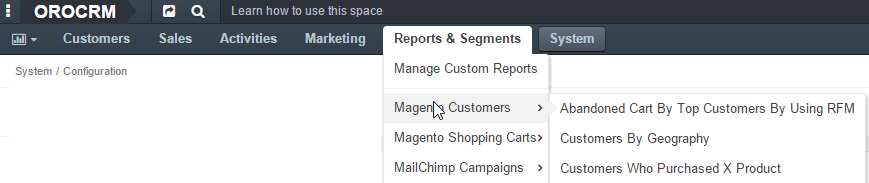
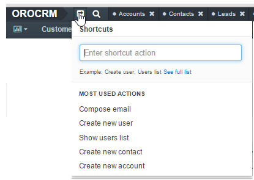

My Menus Configuration¶
This page describes how you can personalize menus of your Oro application. The changes that you make via your personal menus page do not affect other users. If you are an administrator and want to configure menus for the whole system, please see the System Menus Configuration guide.
Menus Page¶
This page contains a list of menus that you can configure.
application_menu—This is the main menu of the application (also called
navigation barin the application settings). Via it you can navigate through Oro application. It is always displayed on every page. Subject to the configuration, it may be displayed horizontally or vertically. In the latter case, the menu items are displayed as icons. For more information, see Main Menu.shortcuts—You can find this menu in the top panel of the application, next to the organization name. Via it you can quickly perform common actions from anywhere. It is always displayed on every page. For more information, see Shortcuts.
usermenu—This is the menu that you can access by clicking on your name in the upper-right corner of the application. Via it you can access your profile, emails, tasks and events. It is always displayed on every page. For more information, see User Menu.

calendar_menu—This is a specialized menu that you can find on the My Calendar page. Via it you can change the displayed calendar color, hide or remove a calendar from view. For more information, see Add and Manage Calendar Items Displayed.
Menu Configuration¶
When you open a menu configuration, you can see a list of menu items in the left panel of the page. A menu can be multi-level (as a default main menu, for example) with child menu items nested under a parent menu items (e.g. Reports, Manage Custom reports are child menu items of the Reports&Segments menu item in the main menu). Menu items in a menu can be visually separated by a divider (a horizontal line). Dividers help you logically organize menu items.
Note
Some menus (or some menu levels) cannot display dividers. For example, if you add a divider to the first level of the main menu (application_menu), this divider will not be displayed.
Expand / Collapse a Menu¶
To expand / collapse a parent menu item, click an arrow in front of it.

To expand / collapse all menu items, click the ellipses drop-down menu in the upper-right corner of the left panel and click Expand All or Collapse All.
Add a Divider¶
- In the left panel, click a menu item which will be parent for the menu divider that you create.
- Click the Create drop-down on the top right and click Create Divider on the list.

The created divider will appear as the last one on the list of children of the same parent item. You can move it to the position that you need as described in the Rearrange Menu Items / Dividers action description.
Note
Some menus (or some menu levels) cannot display dividers. For example, if you add a divider to the first level of the main menu (application_menu), this divider will not be displayed.
Important
You need to reload the page to see changes.
Rearrange Menu Items / Dividers¶
You can change the position of an item / divider in a menu by dragging and dropping it in the left panel. You can change the order of menu items at the same level as well as move an item / divider to the higher or lower level.
When you drag-and-drop items, pay attention to the arrow that shows where the item will be placed:
If an arrow points to the place between items, that is where the moved item will be placed.

- If and arrow appears in front of a menu item, then the moved item will become a child of the item that the arrow points to.